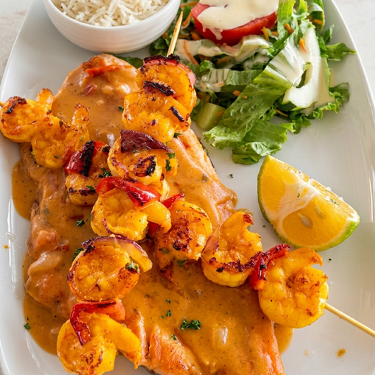
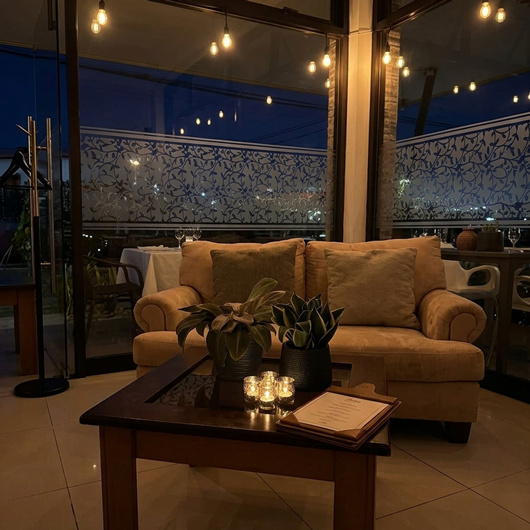
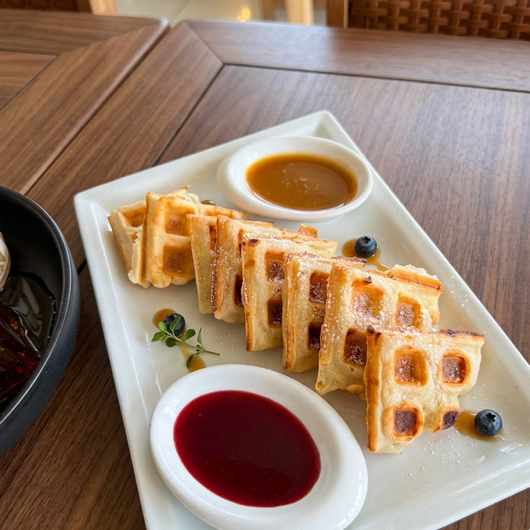
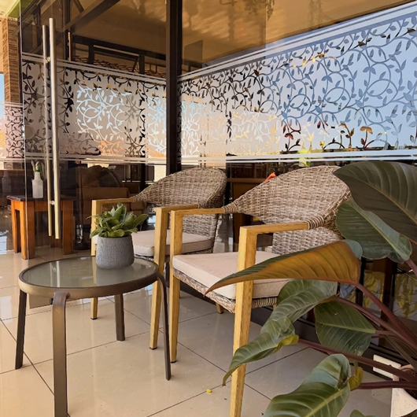
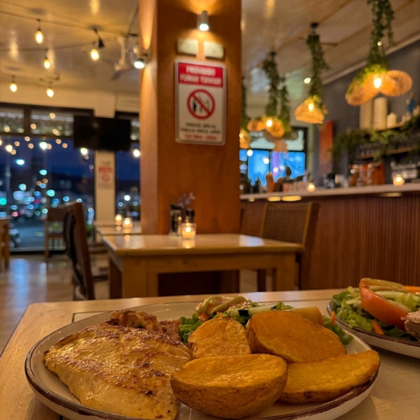
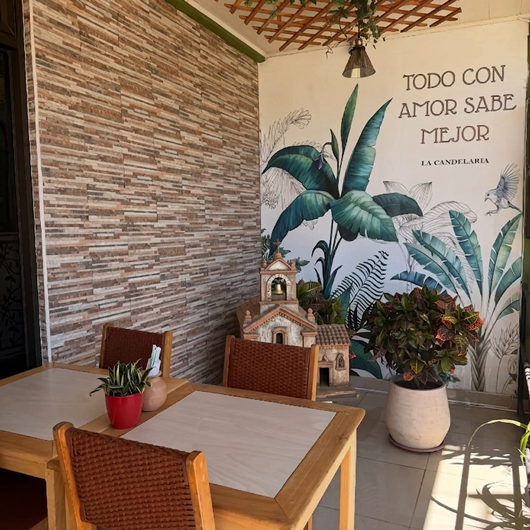

Candelaria Restaurante
Crepas, carnes y buena mesa en Heredia
Crepas, carnes y buena mesa en Heredia






Ambiente al aire libre, opciones veganas, cócteles
precio
₡5,000 – ₡10,000
Lleva la experiencia de Organic Atelier hasta la puerta de tu hogar. Nuestro menú completo está disponible para entrega a domicilio a través de Uber Eats.
Lunes - Jueves:
11:00 - 21:00
Viernes - Sábado:
11:00 - 22:30
Domingo:
11:00 - 19:00
San Francisco de Heredia, 400m Oeste de la Iglesia